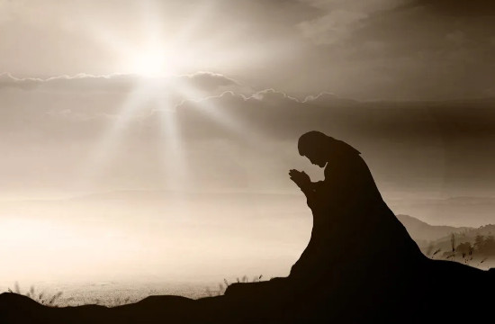

LIÇÕES BÍBLICAS CPAD
ADULTOS
2º Trimestre de 2025
Título: E o Verbo se fez carne — Jesus sob o olhar do Apóstolo do amor
Comentarista: Elienai Cabral
Lição 11: A intercessão de Jesus pelos discípulos
Data: 15 de junho de 2025

TEXTO ÁUREO
“E a vida eterna é esta: que conheçam a ti só por único Deus verdadeiro e a Jesus Cristo, a quem enviaste.” (Jo 17.3).
VERDADE PRÁTICA
A oração que Jesus fez ao Pai em favor de si próprio, dos seus discípulos e da sua Igreja ressoa ainda nos dias atuais.
LEITURA BÍBLICA EM CLASSE
João 17.1-3,11-17.
1 — Jesus falou essas coisas e, levantando os olhos ao céu, disse: Pai, é chegada a hora; glorifica a teu Filho, para que também o teu Filho te glorifique a ti,
2 — assim como lhe deste poder sobre toda carne, para que dê a vida eterna a todos quantos lhe deste.
3 — E a vida eterna é esta: que conheçam a ti só por único Deus verdadeiro e a Jesus Cristo, a quem enviaste.
11 — E eu já não estou mais no mundo; mas eles estão no mundo, e eu vou para ti. Pai santo, guarda em teu nome aqueles que me deste, para que sejam um, assim como nós.
12 — Estando eu com eles no mundo, guardava-os em teu nome. Tenho guardado aqueles que tu me deste, e nenhum deles se perdeu, senão o filho da perdição, para que a Escritura se cumprisse.
13 — Mas, agora, vou para ti e digo isto no mundo, para que tenham a minha alegria completa em si mesmos.
14 — Dei-lhes a tua palavra, e o mundo os odiou, porque não são do mundo, assim como eu não sou do mundo.
15 — Não peço que os tires do mundo, mas que os livres do mal.
16 — Não são do mundo, como eu do mundo não sou.
17 — Santifica-os na verdade; a tua palavra é a verdade.
INTRODUÇÃO
Na presente lição, iremos explorar João 17. Este capítulo descreve a oração mais significativa que o nosso Senhor fez em benefício de si mesmo, ou seja, a sua glorificação, bem como a dos seus discípulos e dos cristãos que viriam a crer num futuro próximo. A oração sacerdotal de Jesus é uma importante lição sobre a unidade do povo de Deus no seu Reino e o propósito de promover o Evangelho de Jesus no mundo.
Palavra-Chave:
INTERCESSÃO
I. A ORAÇÃO DE JESUS E SUA GLORIFICAÇÃO
1. A oração de Jesus. Entre todas as orações do Senhor documentadas nos Evangelhos, é indiscutível que foi João quem relatou, possivelmente, a mais elevada oração de Jesus (17.1-26). No início de João 17.1 está escrito: “Jesus falou essas coisas”. Essa frase remete ao discurso do Senhor sobre a vinda do Espírito como Consolador, conforme estudado anteriormente (Jo 16.13). Certamente o local onde o Senhor se encontrava era o mesmo em que partilhou a Última Ceia com seus discípulos. Em relação à oração de Jesus no capítulo 17, os estudiosos costumam se referir a ela como “A Oração Intercessória”, “A Oração Sacerdotal de Jesus” ou “A Oração da Consagração”. Nosso Senhor apresentou essa oração em, pelo menos, três partes: Ele orou por si mesmo (Jo 17.1-8), intercedeu pelos seus discípulos (Jo 17.9-19) e, também, fez uma oração pela Igreja futura (Jo 17.20-26).
2. A oração de Jesus pela sua glorificação. Na oração de Jesus pedindo por sua “glorificação” havia um significado espiritual mais profundo, que não se tratava de um ato egoísta. Como já abordamos, Ele estava plenamente ciente de seu ministério e, portanto, da finalidade de sua missão na Terra. Assim, em sua conversa direta com o Pai, Jesus declara que “é chegada a hora”, referindo-se ao momento em que o Pai o glorificaria por meio de seu sacrifício redentor no Calvário. Nosso Senhor expressa: “glorifica a teu Filho para que também o teu Filho te glorifique a ti” (Jo 17.1). Que tipo de glorificação seria essa? Mediante a sua morte, o mundo o conheceria e a vida eterna seria oferecida a todos que o aceitassem como Salvador de suas vidas. Glorificar alguém significa torná-lo conhecido. Jesus seria reconhecido como “o Filho de Deus, o Salvador do mundo” (Jo 17.3,4).
3. A mesma glória com o Pai. No versículo 5 está escrito: “E, agora, glorifica-me tu, ó Pai, junto de ti mesmo, com aquela glória que tinha contigo antes que o mundo existisse”. Essa referência à glória se relaciona à divindade do nosso Senhor como o Verbo Divino, antes da sua encarnação. Na realidade, o que Jesus solicita é a glorificação mútua entre o Filho e o Pai (v.5). Somente nosso Senhor, o Filho de Deus, poderia fazer tal pedido por essa glorificação, uma honra que Ele possuía “antes que o mundo existisse”. Essa declaração evidencia a divindade de Jesus, ao revelá-lo como um com o Pai (Jo 17.11,21,24). Assim, com base nessa igualdade com o Pai, o pecador que confessa e se arrepende de seus pecados recebe a vida eterna e conhece, pela fé, “o único Deus verdadeiro e a Jesus Cristo, a quem enviaste” (Jo 17.3).
II. A ORAÇÃO DE JESUS PELOS DISCÍPULOS
1. Intercessão pela proteção dos discípulos. Nos versículos 4 a 8, exceto o versículo 5, Jesus ora como se estivesse apresentando um relato ao Pai sobre tudo o que realizou durante seu ministério na Terra. No versículo 6, Ele intercede por seus discípulos e pela unidade entre eles, uma vez que seriam os responsáveis por continuar a obra que Jesus havia iniciado. Para o Pai, o nosso Senhor se refere aos discípulos como “homens que do mundo me deste” (v.6). O Redentor revela que seus discípulos pertenciam ao Pai e que Este os entregou a Ele: “Eram teus, e tu mos deste, e guardaram a tua palavra” (Jo 17.6b). Ao longo de quase quatro anos, Jesus investiu nesses homens, que se mostraram fiéis, prontos para prosseguir com a missão de evangelização.
2. Os discípulos receberam a Palavra. Apesar de, em certas ocasiões, os discípulos terem encontrado dificuldades para compreender completamente os ensinamentos de Jesus, as suas recordações foram reavivadas pelo Espírito Santo quando receberam o poder no dia de Pentecostes, permitindo-lhes assim entender e difundir o que aprenderam com o Mestre (At 2.14-36). No versículo 6, Jesus referiu-se ao Pai afirmando que os seus discípulos mantiveram a mensagem recebida: “E guardaram a tua Palavra”. Ao vivermos conforme a Palavra de Deus, aceitando e obedecendo aos ensinamentos de Cristo, podemos testemunhar o Evangelho com credibilidade.
3. Protegidos do mundo. O versículo 14 afirma: “Dei-lhes a tua palavra, e o mundo os odiou, porque não são do mundo, assim como eu não sou do mundo”. É importante prestar atenção ao termo “mundo”. Este pode referir-se ao “universo criado” (Jo 17.5) ou à humanidade (Jo 3.16). No entanto, aqui Jesus se refere ao sistema espiritual governado por Satanás (Jo 17.14). O apóstolo Paulo descreve esse “mundo” como um governo espiritual maligno (Ef 2.2). Por conseguinte, o nosso Senhor deseja que o Pai guarde os seus discípulos desse sistema mundano, que é incompatível com o Evangelho, sob a influência do “príncipe deste mundo” (Jo 12.31; 14.30; 16.11).
III. A ORAÇÃO DE JESUS PELOS QUE VIRIAM A CRER
1. Oração pela unidade da Igreja. Nesta terceira parte de sua súplica, Jesus pediu pela unidade da Igreja. Mais do que uma unidade de natureza eclesiástica ou orgânica, Jesus intercedeu pela harmonia espiritual do seu povo. Nosso Senhor ansiava por uma união genuína, tal como a que existe entre Ele e o Pai. Essa foi a súplica do nosso Senhor: “para que todos sejam um, assim como tu, ó Pai, estás em mim, e eu em ti” (Jo 17.21).
2. Propósito da unidade. O propósito da unidade espiritual da Igreja, conforme a intercessão do nosso Senhor, é que “o mundo creia que tu me enviaste” (v.21). Assim, a Igreja revela essa unidade espiritual com Cristo por pelo menos quatro motivos: (1) união essencial dos salvos como membros do Corpo de Cristo (1Co 12.12); (2) união essencial dos salvos promovida pelo conhecimento crescente sobre Jesus Cristo (2Pe 3.18); (3) união essencial dos salvos no desenvolvimento do Fruto do Espírito (Gl 5.22,23); (4) união essencial dos salvos manifestada na glória como filhos de Deus e detentores da vida eterna (Jo 17.22).
3. Oração por encorajamento à unidade. Em João 17.21,22, o nosso Senhor roga para que os discípulos sejam incentivados a manter a unidade com Ele. A crença em Cristo como o único e suficiente Salvador é a principal razão da unidade cristã, de modo que os discípulos sejam encorajados a promover esse testemunho no mundo. Assim, sem essa unidade de fé, o testemunho perde completamente a sua credibilidade.
CONCLUSÃO
É extraordinário perceber que a oração sacerdotal de Jesus Cristo continua a ressoar nos dias atuais. Fazemos parte do Corpo de Cristo e esse privilégio deve manter-nos cientes da nossa função no Reino de Deus. Por isso, temos a responsabilidade de nos apresentar entusiasmados para testemunhar com coragem o Evangelho, revelando a obra que o Senhor Jesus realizou no Calvário.
REVISANDO O CONTEÚDO
1. Em quais partes podemos apresentar a oração sacerdotal de Jesus?
Nosso Senhor apresentou essa oração em, pelo menos, três partes: Ele orou por si mesmo (Jo 17.1-8), intercedeu pelos seus discípulos (Jo 17.9-19) e, também, fez uma oração pela Igreja futura (Jo 17.20-26).
2. A que se relaciona a menção à glória no versículo 5?
Essa referência à glória se relaciona à divindade do nosso Senhor como o Verbo Divino, antes da sua encarnação.
3. De que forma Jesus dirige a sua oração ao Pai nos versículos 4 a 8?
Nos versículos 4 a 8, exceto o versículo 5, Jesus ora como se estivesse apresentando um relato ao Pai sobre tudo o que realizou durante seu ministério na Terra.
4. A que “Mundo” se refere Jesus em João 17.14?
Jesus se refere ao sistema espiritual governado por Satanás (Jo 17.14).
5. Indique pelo menos dois motivos que evidenciam a unidade espiritual dos salvos com Cristo.
(1) união essencial dos salvos como membros do Corpo de Cristo (1Co 12.12); (2) união essencial dos salvos promovida pelo conhecimento crescente sobre Jesus Cristo (1Pe 3.18).